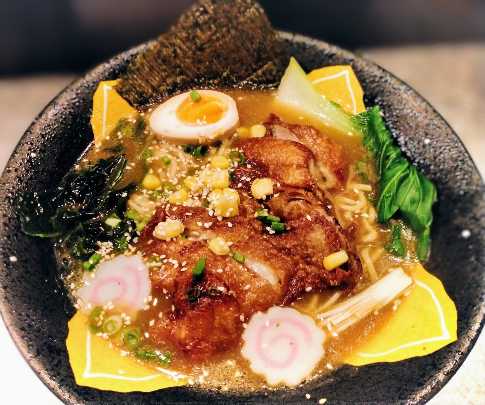
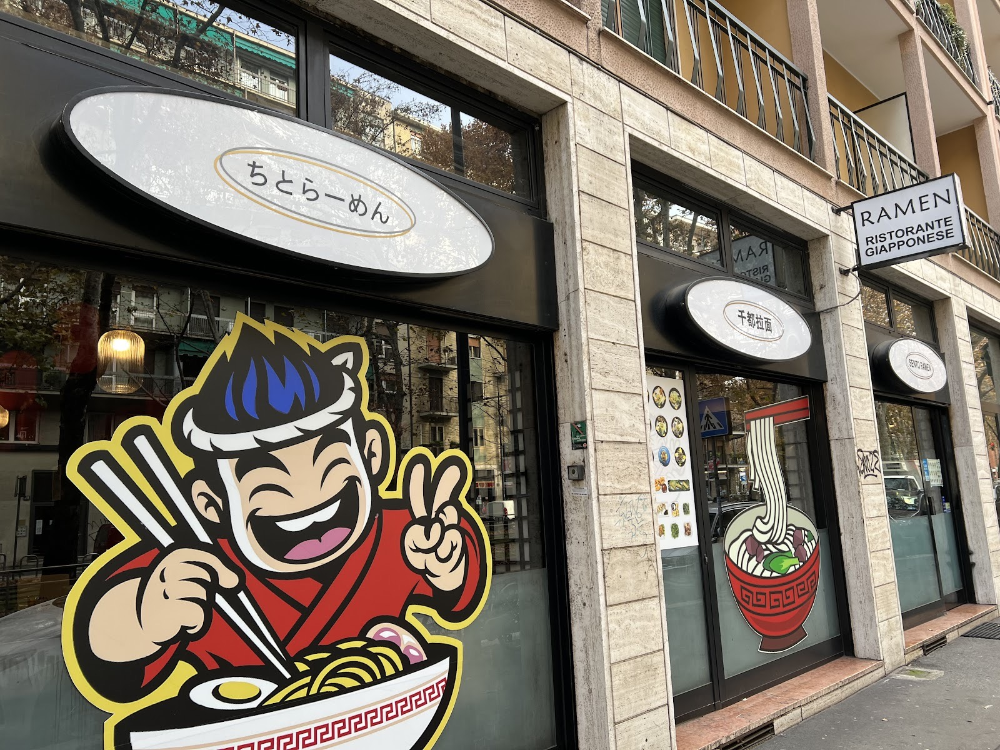
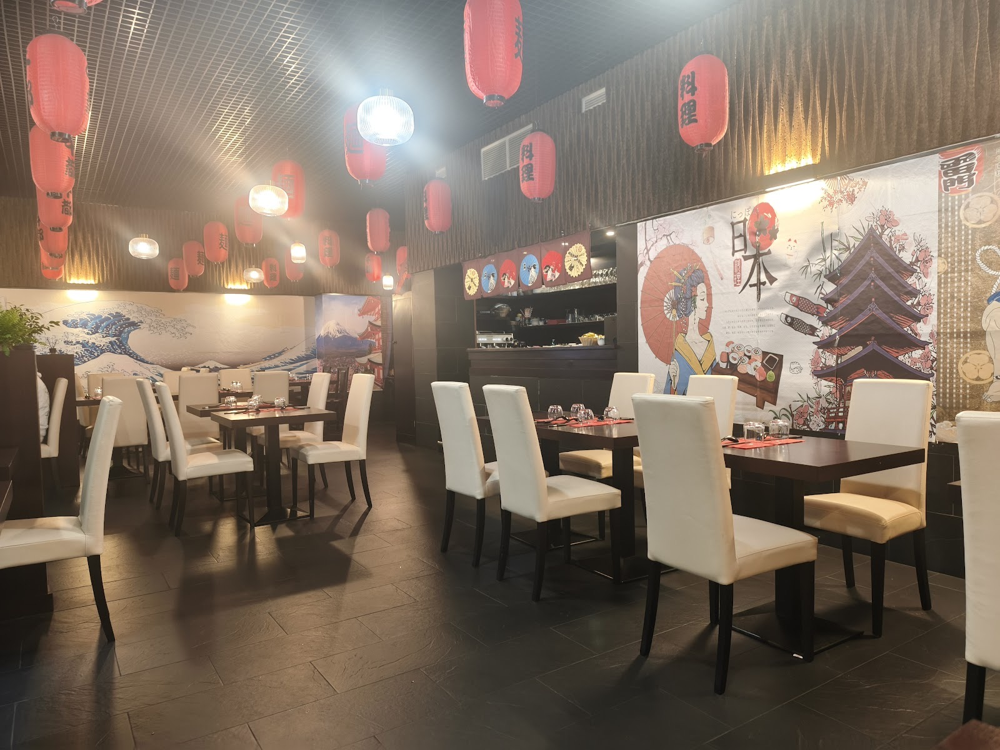
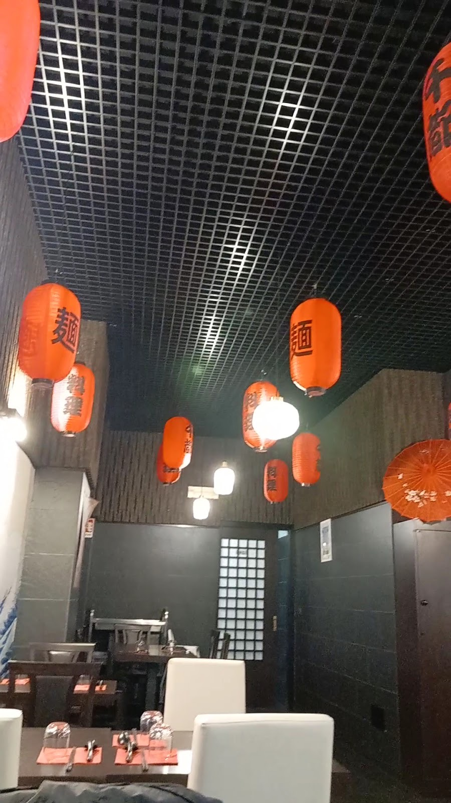

11€
Chashu Ramen
Brodo miso, fette di maiale brasato, uovo marinato, naruto, alga nori, cipollotto e sesamo.

Brodo che sobbolle da ore, noodles al dente, chashu che si scioglie in bocca. Un pezzo di Giappone in Via Cenisio, per chi il ramen lo vive come una scena di manga.

店Da Sento Ramen il rito del ramen è un piccolo racconto illustrato: lanterne rosse accese, l'onda di Hokusai sul muro, il vapore che sale da ogni ciotola come in una tavola di manga. Ogni brodo — miso, soia o tantanmen — nasce da ore di cottura lenta, per un piatto che scalda e racconta una storia.
"Location artefatta che richiama una tipica locanda giapponese... uno dei ramen più buoni di Milano." — Recensione Tripadvisor
Lanterne rosse, l'onda di Hokusai, legno scuro: un piccolo pezzo di Giappone a due passi da Via Cenisio.

La Sala Principale
Lanterne e Atmosfera"Location artefatta che richiama una tipica locanda giapponese. Uno dei ramen più buoni di Milano. Personale gentilissimo."
"Menù non vastissimo, ma piatti ben preparati: il ramen, in diverse varianti, buono. Ottimo il servizio, prezzo giusto."
"Ho cenato da Sento Ramen e l'esperienza è stata fantastica. Il vero punto di forza è la personalizzazione del brodo, ricco e saporito."
Ci trovi in Via Cenisio 13, a Milano.
| Lunedì | Chiuso |
| Martedì | 12:00–15:00 / 19:00–23:00 |
| Mercoledì | 12:00–15:00 / 19:00–23:00 |
| Giovedì | 12:00–15:00 / 19:00–23:00 |
| Venerdì | 12:00–15:00 / 19:00–23:00 |
| Sabato | 12:00–15:00 / 19:00–23:00 |
| Domenica | 12:00–15:00 / 19:00–23:00 |
Via Cenisio 13, 20154 Milano (MI)
📞 02 4977 0189
Indicazioni stradali →
Compila il modulo per una richiesta diretta, oppure prenota in un clic tramite TheFork. Ti aspettiamo per la tua prossima ciotola di ramen.
Prenota su TheForkTi ricontatteremo al più presto per confermare. In alternativa, chiamaci al 02 4977 0189.